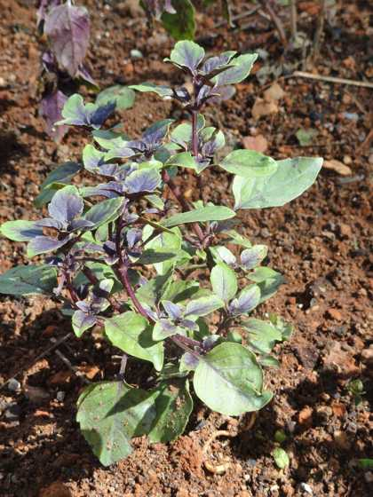

ABOUTお店の想い
店名の「blissful」は「至福の」という意味の英語です(ここでの店名の意図は制作側のイメージで、お店の公式な説明ではありません)。体にやさしいものを食べて、ほっとできる時間を届ける。そんな営みを、敦賀の住宅街のまちかどでひとつずつ。
- 卵・乳・白砂糖・小麦を使わない、100%植物由来の食品(Instagramプロフィールより)
- ヴィーガン認証を取得(Instagramプロフィールより)
- テイクアウト専門。お問い合わせ・ご予約はInstagramのDMで(電話は受け付けていません)
- 強いアレルギーのある方、コンタミネーション(混入)が気になる方は事前にご相談を
